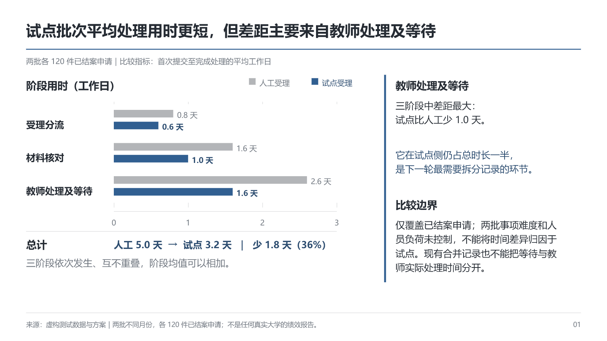
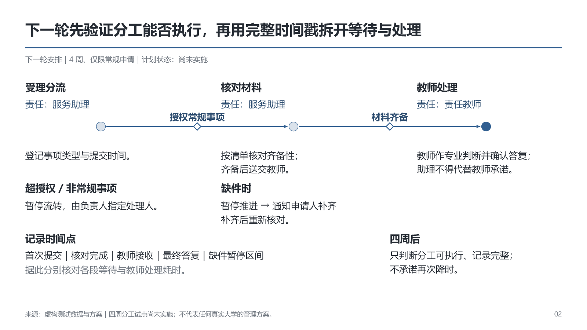
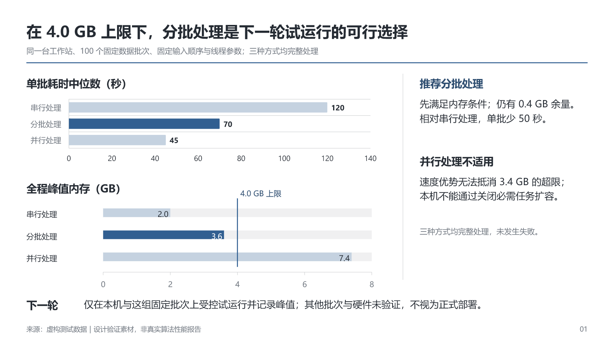
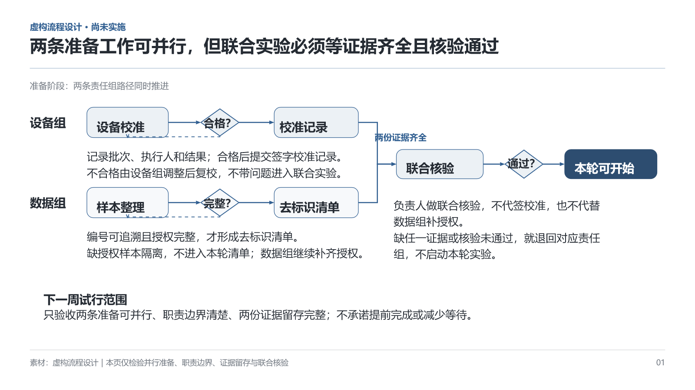
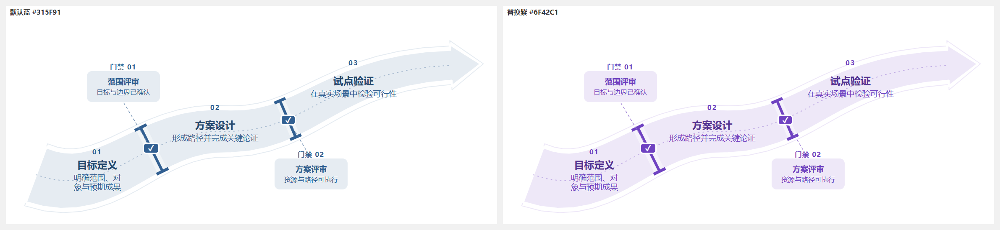

科研／咨询式排版：历史失败基线
01 · 共同尺度呈现差异，解释紧邻关键证据

下载两页可编辑 PPTX · 历史内部评价
02 · 阶段门禁与职责、异常、验收共同排版

参考阶段门禁结构，重新编排局部几何。普通说明保持开放文字，源满页尺寸不再限制本页。
03 · 门槛直接落在图中，选择由证据解释

下载可编辑 PPTX · 历史内部评价 · 本页无需结构资产。
04 · 双轨并行与共同核验，图内关系、图外信息

下载可编辑 PPTX · 历史内部评价 · 参考并列、汇聚、条件分支及反馈结构，保留真实关系重新组合。
统一主题色
35个核心结构已接入 componentTheme.primaryColor。默认蓝色 #315F91，修改主色可统一推导色阶；历史PPTX需要重新生成。以下为阶段门禁的蓝紫浏览器对照。

主题实现与审核报告